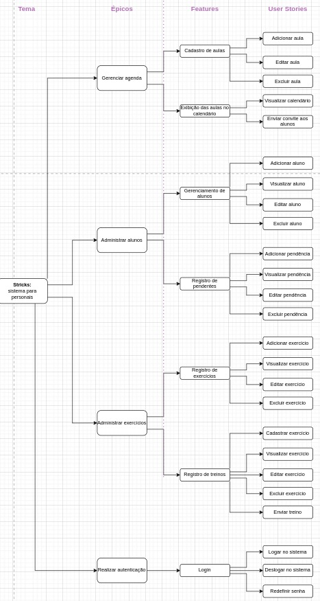

Documento de requisitos
Histórico de revisão:
| Data | Versão | Descrição | Autor |
|---|---|---|---|
| 30/11/22 | 0.1 | Criação do documento e introdução | Pedro, Mário, Israel |
| 30/11/22 | 0.2 | Elaboração do diagrama, elicitação dos requisitos funcionais | Beatriz |
| 01/12/22 | 0.3 | Elicitação dos requisitos não-funcionais e criação do rascunho dos User Stories | Guilherme, Pedro |
| 04/12/22 | 0.4 | Revisão dos User Stories e elaboração de seus Critérios de Aceite | Beatriz |
| 06/12/22 | 0.5 | Documentação dos MVPs | Mário |
| 07/12/22 | 0.6 | Re-organização do diagrama e refatoração dos requisitos funcionais | Pedro |
| 19/12/22 | 0.7 | Alterações nos requisitos não-funcionais e remoção de textos desnecessários. | Pedro |
| 09/01/23 | 0.8 | Atualização do diagrama | Mário |
| 09/01/23 | 0.9 | Correção referente a issue #10 e ajustes referentes ao novo diagrama | Beatriz |
1. Introdução
Este documento tem como objetivo apresentar os requisitos do STRIX, sistema de gerenciamento para Personal Trainers. Por meio deste documento, o cliente tomará conhecimento das funcionalidades do projeto e os desenvolvedores terão uma noção de como implementar tais funcionalidades.
1.1 Objetivos
Dentre os objetivos deste documento estão o de listar os requisitos funcionais e não funcionais do sistema em questão.
1.2 Escopo
Serão abordados os requisitos funcionais com base na classificação do SAFe framework, e os requisitos não-funcionais com base na classificação FURPS+.
2. Requisitos
Esta seção apresenta os requisitos elicitados de acordo com as estruturas de classificação especificadas acima.
2.1 Requisitos Funcionais
Os requisitos funcionais estão organizados hierarquicamente na estrutura de Épicos, Features e User Stories. Para sua rastreabilidade, o ID é dado no formato X.Y.Z, com X o ID do épico, Y o ID da feature, e Z o ID da user story. A organização dos requisitos se deu com base na estrutura do SAFe.

2.1.1 Épicos
| ID | Nome |
|---|---|
| 1.0.0 | Gerenciar Agenda |
| 2.0.0 | Administrar Alunos |
| 3.0.0 | Administrar Exercícios |
| 4.0.0 | Realizar Autenticação |
2.2.2 Features
| ID | Nome |
|---|---|
| 1.1.0 | Cadastro de aulas |
| 1.2.0 | Exibição de aulas no calendário |
| 2.1.0 | Gerenciamento de alunos |
| 2.2.0 | Registro de pendentes |
| 3.1.0 | Registro de categoria |
| 3.2.0 | Registro de exercícios |
| 3.3.0 | Registro de treinos |
| 4.1.0 | Login |
2.2.3 User Stories
| ID | Nome | Descrição | Critérios de aceite |
|---|---|---|---|
| 1.1.1 | Adicionar aula | Eu como personal, Quero adicionar uma aula, Para lembrar-me mais tarde. |
Deve abrir o formulário para preenchimento da data, hora, duração, nome da aula e seleção de alunos; Deve permitir apenas a inclusão de alunos cadastrados no sistema; Deve permitir a não inclusão de alunos (campo não obrigatório); Não deve permitir a marcação de aulas com choque de horário (levando em consideração a hora de início e sua duração). |
| 1.1.2 | Editar aula | Eu como personal, Quero editar uma aula registrada, Para alterar algum dado. |
Deve permitir editar todos os dados da aula (data, hora, duração, nome da aula e alunos); Não deve seguir os mesmos critérios de inclusão - não permitir marcação com choque de horários e inclusão de alunos não registrados) |
| 1.1.3 | Excluir aula | Eu como personal, Quero excluir uma aula registrada, Para retirar um compromisso que não existe mais. |
Deve realizar a exclusão da aula selecionada após a confirmação da exclusão por meio de modal; Deve retirar a aula excluída do calendário. |
| 1.2.1 | Visualizar calendário | Eu como personal, Quero visualizar no calendário as aulas que tenho marcadas, Para organizar meus compromissos. |
Deve listar as aulas registradas no calendário, cada dia deve conter as aulas marcadas em ordem crescente de horário; Deve mostrar apenas as aulas que ainda irão acontecer, não deve aparecer as dos dias passados; |
| 1.2.2 | Enviar convite aos alunos | Eu como personal, Quero enviar o convite de aula ao aluno, Para que ele receba o mesmo em seu próprio calendário e possa se planejar para a aula. |
Deve realizar o envio de convite da aula ao calendário do email do(s) aluno(s) registrado(s) naquela aula. |
| 2.1.1 | Adicionar aluno | Eu como personal, Quero adicionar um aluno, Para gerenciar suas aulas e pagamentos. |
Deve abrir o formulário para preenchimento dos dados do aluno contendo nome completo, data de nascimento, telefone, CPF e email; Deve exibir máscara nos campos de data, telefone e CPF; Deve realizar a validação do CPF e da data que não pode ser superior a atual; Não deve permitir a inclusão de alunos com o mesmo CPF; Todos os campos são obrigatórios. |
| 2.1.2 | Visualizar aluno | Eu como personal, Quero visualizar os meus alunos, Para obter a listagem de todos eles. |
Deve permitir a visualização da lista de alunos adicionados; |
| 2.1.3 | Editar aluno | Eu como personal, Quero editar os dados de um aluno, Para os manter sempre atualizados. |
Deve permitir a edição dos dados do aluno, com exceção do CPF; Os campos devem seguir as mesmas regras de inclusão do aluno quanto as validações, máscaras e obrigatoriedade. |
| 2.1.4 | Excluir aluno | Eu, como usuário, desejo remover um aluno previamente adicionado, para lidar com a desistência de alunos. | Deve permitir a exclusão do aluno selecionado após a confirmação da exclusão por meio de modal; Deve retirar o aluno excluído do calendário. |
| 2.2.1 | Adicionar pendência | Eu como personal, Quero adicionar uma pendência, Para estar sempre ciente dos pagamentos a serem feitos. |
Deve permitir adicionar uma pendência de pagamento ao preencher os campos de valor, data de vencimento, título, aluno e status. Deve permitir adicionar apenas 1 aluno já registrado; Deve exibir a máscara nos campos de valor e data; O status pode ser “em aberto” ou “pago”. |
| 2.2.2 | Visualizar pendência | Eu como personal, Quero visualizar as pendências de pagamento, Para me organizar financeiramente. |
Deve listar todas as pendências cadastradas; |
| 2.2.3 | Editar pendência | Eu com personal, Quero editar uma pendência registrada, Para manter a mesma atualizada. |
Deve permitir editar todos os dados da pendência; Os campos devem seguir as mesmas regras da inclusão de pendência. |
| 2.2.4 | Excluir pendência | Eu como personal, Quero excluir uma pendência, Para caso a pendência não exista mais. |
Deve permitir excluir a pendência após a confirmação por meio de modal; Deve retirar a pendência da listagem. |
| 3.1.1 | Adicionar categoria | Eu como personal, Quero adicionar uma categoria, Para poder vincular os exercícios a ela classificando-os. |
Deve permitir adicionar uma categoria ao preencher os campos de nome e descrição. Ambos os campos são de preenchimento obrigatórios. |
| 3.1.2 | Visualizar categoria | Eu como personal, Quero visualizar as categorias cadastradas, Para conferir se elas estão corretas ou se necessitam de alteração. |
Deve permitir a visualização da lista de categorias adicionadas. |
| 3.1.3 | Excluir categoria | Eu como personal, Quero excluir uma categoria cadastradas, Para não aparecer mais nas opções de seleção. |
Deve permitir excluir a categoria selecionada após confirmação pelo modal; Deve retirar a categoria excluída da listagem. |
| 3.2.1 | Adicionar exercício | Eu, como usuário, Quero criar um novo exercício,Para poder cadastrar os exercícios que eu enviarei aos alunos. |
Deve permitir adicionar um exercício ao preencher os campos de nome, repetições, duração, categoria e observação; Todos os campos devem ser obrigatórios. |
| 3.2.2 | Visualizar exercício | Eu, como usuário, Quero visualizar os dados de um exercício, Para verificar se as instruções estão corretas. |
Deve permitir editar todos os dados do exercício e salvá-lo. |
| 3.2.3 | Editar exercício | Eu, como usuário, Quero editar os dados de um exercício, Para poder modificar alguma instrução. |
Deve permitir editar todos os dados do exercício e salvá-lo. |
| 3.2.4 | Excluir exercício | Eu, como usuário, Quero remover do sistema um exercício previamente cadastrado, Para não instruir mais este exercício aos alunos. |
Deve permitir excluir o exercício selecionado após confirmação pelo modal; Deve retirar o exercício excluído da listagem. |
| 3.3.1 | Adicionar treino | Eu, como usuário, Quero criar um novo treino e adicioná-lo ao sistema, Para poder guardá-los e enviar mais facilmente aos alunos. |
Deve permitir criar um treino ao selecionar os exercícios desejados e escrever o nome do treino; É obrigatório selecionar ao menos um exercício e escrever o nome. |
| 3.3.2 | Visualizar treino | Eu como personal, Quero visualizar os treinos prontos, Para analisar qual irei enviar ao meu aluno. |
Deve listar todos os treinos cadastrados. |
| 3.3.3 | Editar treino | Eu como persosnal, Quero editar um treino, Para manter o mesmo atualizado. |
Deve permitir editar os dados do treino; Os campos devem seguir as mesmas regras da inclusão do treino. |
| 3.3.4 | Excluir treino | Eu como personal, Quero excluir um treino, Para caso ele não sirva mais. |
Deve permitir excluir o treino após a confirmação por meio de modal; Deve retirar o treino da listagem. |
| 3.3.5 | Enviar treino | Eu, como usuário, Quero selecionar um treino, Para enviá-lo a um aluno. |
Deve permitir o envio do treino por meio da seleção do mesmo e do(s) aluno(s) a recebê-lo; Deve enviar o treino ao e-mail do(s) aluno(s) selecionado(s); |
| 4.1.1 | Logar no sistema | Eu, como usuário, Quero que o sistema possua autenticação, Para a segurança dos dados contidos nele. |
Deve permitir realizar o login por meio do preenchimento de usuário e senha; Não deve permitir o login caso alguma informação esteja incorreta; O login deve expirar após 1 mês de realizado, exigindo uma nova autenticação. |
| 4.1.2 | Deslocar no sistema | Eu como usuário, Quero deslogar do sistema, Para que os dados dos alunos continuem protegidos ao mudar de computador. |
Deve deslogar o usuário e voltar à tela de login. |
| 4.1.3 | Alterar senha | Eu, como usuário, Quero redefinir a minha senha de login, Para me autenticar novamente caso eu a esqueça. |
Deve permitir a redenifição de uma nova senha e confirmá-la após a pergunta de segurança ser respondida com sucesso; Não deve permitir mais de uma alteração no período de 12 horas; |
2.2 Requisitos Não-Funcionais
| ID | Categoria | Descrição |
|---|---|---|
| RNF01 | Implementação | A API do sistema deve ser desenvolvida em NodeJS. |
| RNF02 | Implementação | A API do sistema deve se conectar a um banco de dados Postgres. |
| RNF03 | Implementação | O front-end do sistema deve ser desenvolvido em NextJS. |
| RNF04 | Suportabilidade | O sistema web e todas as suas funcionalidades devem ser suportadas pelas últimas versões dos browsers modernos (Chrome v107 ou superior, Firefox v108 ou superior) |
3. MVP: Minimum Viable Product
3.1 MVP 1
| User Story | Sprint |
|---|---|
| [2.1.1] Adicionar aluno | Sprint 4 |
| [2.1.2] Visualizar aluno | Sprint 4 |
| [2.1.3] Editar aluno | Sprint 4 |
| [2.1.4] Excluir aluno | Sprint 4 |
| [4.1.1] Adicionar exercício | Sprint 5 |
| [4.1.2] Visualizar exercício | Sprint 5 |
| [4.1.4] Editar exercício | Sprint 5 |
| [4.1.4] Excluir exercício | Sprint 5 |
| [4.2.1] Enviar treino | Sprint 5 |
3.2 MVP 2
| User Story | Sprint |
|---|---|
| [1.1.1] Adicionar aula | Sprint 6 |
| [1.1.2] Editar aula | Sprint 6 |
| [1.1.3] Excluir aula | Sprint 6 |
| [3.1.1] Adicionar pendência | Sprint 6 |
| [3.1.2] Visualizar pendência | Sprint 6 |
| [3.1.3] Editar pendência | Sprint 6 |
| [3.1.4] Excluir pendência | Sprint 6 |
| [3.2.1] Confirmar pagamento | Sprint 7 |
| [5.1.1] Logar no sistema | Sprint 7 |
| [5.1.2] Alterar senha | Sprint 7 |